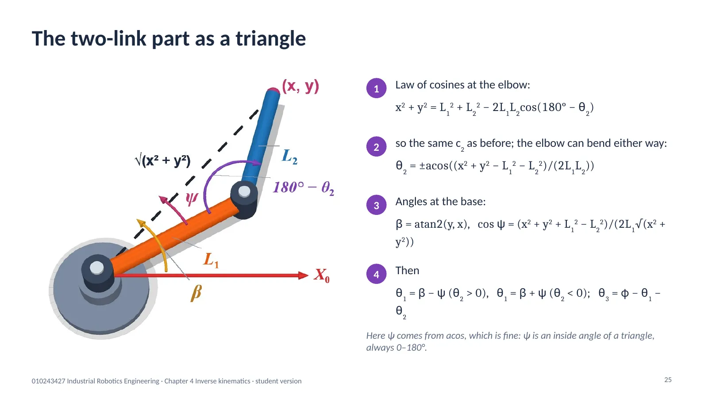
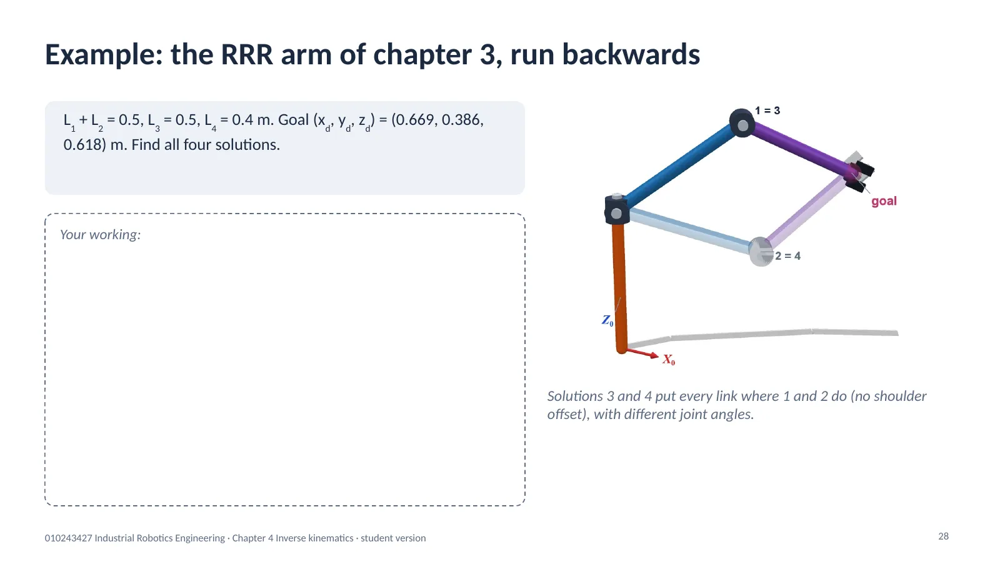
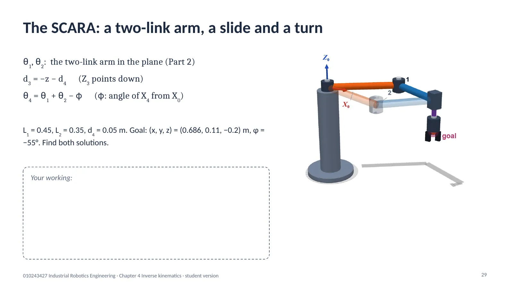

วิธีเรขาคณิตแยกแขนเป็นรูปสามเหลี่ยมในระนาบ แล้วใช้กฎของโคไซน์กับ atan2 ได้สูตรเดียวกับวิธีพีชคณิต แต่เห็นที่มาของทุกมุม หน้านี้ทำแขนสองก้าน แขน RRR ในปริภูมิสามมิติ (สไลด์เดิม Part 2 แก้สูตรที่วงเล็บผิดและเพิ่มคำตอบเอื้อมข้ามหลัง) และ SCARA ครอบคลุมสไลด์หน้า 25–29 มี 3 โจทย์
The geometric method cuts the arm into plane triangles and uses the law of cosines with atan2: the same formulas as the algebra, but every angle can be seen. This page solves the two-link arm, the spatial RRR arm (the old part 2 slides, with their bracket error fixed and the reach-over solutions added) and the SCARA. It covers slides pp. 25–29, with 3 problems.

